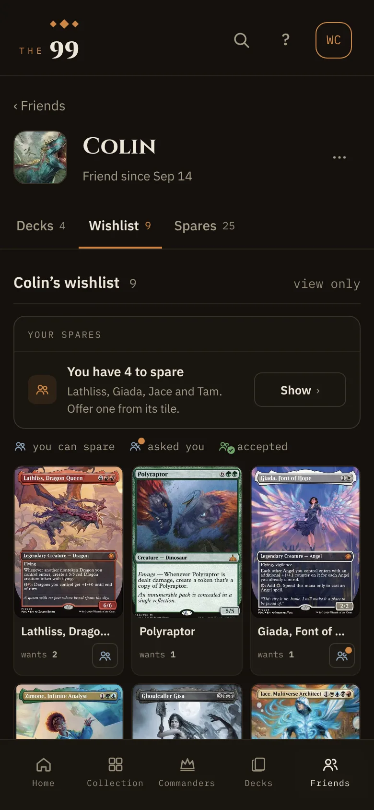
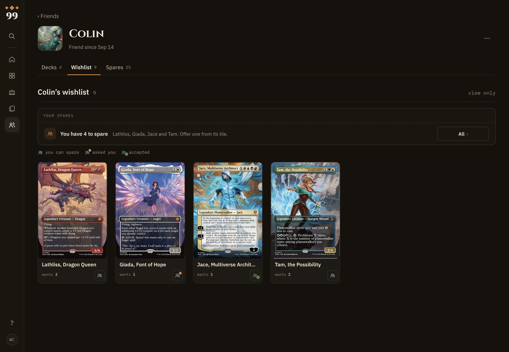

You have a card a friend wants · R2
The mirror of #3202. A friend's Wishlist tab marks the cards you can spare, a call-out at the top says how many, and a tile's press opens your spare with Offer. Your /friends list says how many of each friend's wanted cards you can spare. Nothing changes on your own collection or wishlist. Rendered from main f17ab2a with shipped components (the #3202 tile press, the deck page's to-do card row, the spares modal, Waiting on you). Friends are Colin and Max; art is from other handoffs.
1 · A friend's wishlist marks the cards you can spare
- The #3202 press on the friend's tile, over the caption's lower right, the tile press's sibling. Spares only: a copy every deck of yours is using draws nothing.
- The spare request marks ride the glyph: accent dot while an ask or offer between you is open (asked you, offered), green tick once agreed (accepted, the shipped word).
- No overlap: once any tile draws a press, every tile's wants line takes the press's 26px height, so the press sits beside it and never under the card's name, and the grid stays even.
- Loading: the tab draws as shipped; the call-out, key and presses fade in when the read lands. A failed read draws nothing.
2 · A call-out at the top: you have N to spare
- The deck page's to-do card, one row: eyebrow Your spares, the spare glyph's tile, You have 4 to spare / Lathliss, Giada, Jace and Tam. Offer one from its tile.
- Its one press, Show ›, narrows the grid to those cards; it then reads All ›. The head's count stays the list's.
- No spares: no call-out, no key, no presses (the tab as shipped).
3 · The press opens your spare, with Offer
- The spares modal's shell, You have this: the card box (on Colin’s wishlist · wants 2) and Your spares · N with one row and one Offer.
- Then Offered with days left, Accepted in green, or Declined. If Colin already asked you, the row is their ask with Yes, No and days left.
- Offer is Ask in reverse: Colin gets Waiting on you's row Spare offer: Max is offering you Lathliss / Max has 1 spare. You want 2. with Yes and No, under the ask's rules (14 days, one open per card, ✕ withdraws).
4 · /friends rows count what you can spare
- The shipped spare chip (glyph and count) on a friend's row, before ›, when you can spare any of their wanted cards. It opens their Wishlist tab.
- No count of zero; a friend with an empty wishlist draws nothing.

Colin's wishlist
The call-out, the key, the presses.

The sheet
Lathliss: 1 spare, Offer.

Desktop, Show pressed
Only the four you can spare.
- The press overlapped a card's name on the phone: the wants line now takes the press's height, so the name runs clear.
- Sparing is gone: the agreed state is the shipped accepted / Accepted.
- The in-your-decks dot is gone: only spares are marked, on the tile and in the sheet.
- Max can spare you… is now Max is offering you….
- you have N left the key for a page call-out, the deck page's to-do card row (call 2).
- B (/friends count) joins the design as call 4; C is cut.